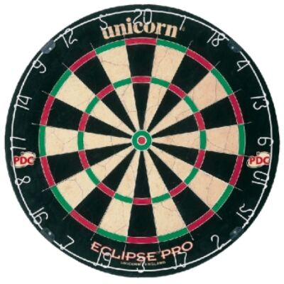

Az Eclipse Pro darts tábla jellemzői:
ezt a táblát használják a PDC darts
világbajnokságokon évek óta
az ultravékony
dróthálónak köszönhetően a kipattanó nyilak
száma minimális
kitűnően látható számozás
a csomag tartalma: egy kiszálló kártya + tábla beállításához
szükséges mérőszalag + a tábla felakasztásához szükséges szerelék
átmérője: 45 cm, dobófelület: 34 cm (szabványos)
Modern, technikailag nagyon jól kidolgozott
a WORKER WJ300 elektromos darts tábla. 1-8 játékos
számra ajánlott a darts. Kemény műanyagból készült a WORKER WJ300
elektromos darts tábla, mely ellenáll a sérüléseknek.
A nyilak tárolására külön kis résszel is ellátott. A WORKER WJ300 elektromos
darts tábla két LCD kijelzővel felszerelt, amelyek egyszerűen kezelhetők.
-Anyaga: szizál kender
-Drótozás: Süllyesztett, 60 fokban élezett
-Átmérő: -Tábla: 45cm
-Dobófelület: 34cm (szabvány)
-Súly: kb. 5kg